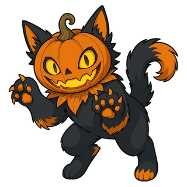
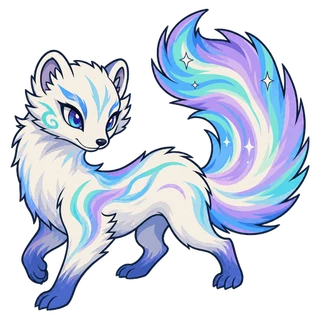

Усиление
Общее название полезных эффектов на игрушке.
Сюда относятся, например, эффекты, повышающие скорость атаки или броню. Эффекты, снимающие ослабления, усиления не снимают.
Связанные игрушки Шестерёнка
Шестерёнка
Эффекты и термины, которые встречаются в бою. В описаниях умений и в записях наведите курсор на слово с пунктирным подчёркиванием или нажмите на него, чтобы увидеть короткое объяснение.
Общее название полезных эффектов на игрушке.
Сюда относятся, например, эффекты, повышающие скорость атаки или броню. Эффекты, снимающие ослабления, усиления не снимают.
Защита, которая принимает урон раньше здоровья.
Блокирует физический, магический и периодический урон и исчезает, когда истекает его время. Щит принимает урон до того, как его снизят броня и сопротивление магии. Броня и сопротивление магии действуют только на урон, пробивший щит. Щиты от разных умений складываются, а щит от того же умения, полученный повторно, заменяет прежний.
Игрушку защищает метка другой игрушки.
Если прямой урон должен вывести её из боя, она его не получает: вместо неё урон принимает игрушка, поставившая метку. От выбывания из-за периодического урона это не спасает.
Получив атаку, возвращает часть её урона врагам поблизости в виде магического урона.
Урон, который не является атакой, например урон от силы умений или периодический урон, не возвращается. Возвращаемая часть считается от урона до учёта брони и щитов; урон атаки, заблокированной шлемом, тоже возвращается — от урона до блока. Шипы действуют так же, но наносят физический урон только атакующему.
Получив атаку, наносит атакующему часть её урона в виде физического урона.
Действуют как отражение, но бьют только атакующего, а не врагов поблизости. Урон, который не является атакой, например урон от силы умений или периодический урон, их не вызывает. Величина считается от урона до учёта брони и щитов; атака, заблокированная шлемом, тоже их вызывает — по урону до блока.
Игрушка ненадолго исчезает с арены, и её нельзя атаковать.
В это время периодический урон тоже не проходит, а наложенные ослабления остаются.
Пока игрушка перемещается под землёй, её нельзя атаковать.
Зарываясь в землю, игрушка снимает с себя все ослабления, а пока она перемещается, периодический урон тоже не проходит.
Игрушка выбыла из боя и после короткого ожидания встаёт снова.
Пока она ждёт, её нельзя атаковать. Она ещё не считается выбывшей, поэтому её команда не проигрывает.
Наносимый и получаемый урон увеличен.
Когда владелец выбывает из боя, его оставшиеся призванные существа впадают в ярость и остаются в ней, пока сами не выбудут.
Восстанавливает потерянное здоровье.
Здоровье не может превысить максимальное: излишек пропадает. Игрушка со Снижением лечения восстанавливает меньше.
Лечит на часть нанесённого урона.
Периодический урон, как от Ожога или Отравления, и урон, который поглотил Щит, ничего не лечат. Игрушка со Снижением лечения восстанавливает меньше.
Получает меньше урона и за это время восстанавливает здоровье в несколько приёмов.
Его накладывает умение Блиссфокса «Сладкий сон» на одного союзника с наименьшим здоровьем.
Не получает никакого урона.
«Девять жизней» Пампкэта: когда в бою он впервые получает урон, который вывел бы его из боя, он не выбывает, а остаётся с 1 ед. здоровья и на заданное время становится неуязвимым. Срабатывает один раз за бой.

ПампкэтСкорость передвижения сильно увеличена.
«Сияющий спринт» Сияницы: она бежит к цели, и Спринт заканчивается, когда её первая обычная атака попадает по этой цели или истекает его время. В Защите замка босс с предметом босса «Спринт» остаётся в Спринте всё время, пока стоит на поле.

СияницаОбщее название вредных эффектов на игрушке.
Сюда относятся эффекты, которые снижают характеристики или мешают действовать. Эффект, снимающий ослабления, снимает все наложенные ослабления сразу, а усиления и щиты оставляет.
В течение заданного времени (по умолчанию 4 сек.) каждую секунду получает магический урон (урон в секунду); если Ожогов несколько, действует только самый сильный.
Ожог длится 4 сек., если умение или предмет, который его накладывает, не задаёт другую длительность. Урон в секунду задаёт это умение или предмет, а размер урона определяется в момент наложения. Если тот же эффект той же игрушки накладывает его снова, прежний Ожог остаётся, а рядом с ним добавляется новый, и у каждого идёт своё время. Если Ожогов несколько, урон наносит только тот, у которого больше всего урона в секунду; когда он заканчивается, его сменяет следующий по силе. Это периодический урон, поэтому мана от него не восполняется.
Под действием яда каждую секунду в течение заданного времени (по умолчанию 6 сек.) получает магический урон (урон в секунду), и все яды складываются.
Яд действует 6 сек., если умение или предмет, который его накладывает, не задаёт другую длительность. Урон в секунду задаёт это умение или предмет, а размер урона определяется в момент наложения. Каждое новое наложение добавляет ещё один яд со своей длительностью, и урон всех действующих ядов складывается. Это периодический урон, поэтому мана от него не восполняется.
В течение заданного времени (по умолчанию 4 сек.) каждую секунду получает физический урон (урон в секунду), а при каждом движении и каждом своём действии сразу получает столько же ещё раз.
Кровотечение длится 4 сек., если умение или предмет, который его накладывает, не задаёт другую длительность. Урон в секунду задаёт это умение или предмет, а размер урона определяется в момент наложения. Если тот же эффект той же игрушки накладывает его снова, прежнее Кровотечение остаётся, а рядом с ним добавляется новое, и у каждого идёт своё время. Если Кровотечений несколько, урон наносит только то, у которого урон в секунду выше всех; когда оно заканчивается, его сменяет следующее по силе. Каждый раз, когда кровоточащая игрушка проводит обычную атаку, переходит на другую клетку, её отталкивают или притягивают, или она применяет своё активное умение, она сразу получает свой урон в секунду ещё раз. Этот урон — тоже периодический урон Кровотечения, поэтому мана от него не восполняется, а эффекты, которые срабатывают на прямой урон или на атаки, не срабатывают. Это физический урон, поэтому его уменьшает броня.
Получаемый физический урон увеличен.
Магический урон не меняется. Если то же умение накладывает Шок снова, время отсчитывается заново.
Скорость атаки снижена.
Скорость передвижения не меняется. Иней, полученный рядом с игрушкой, окружённой холодом, спадает, как только враг отходит от неё; Иней от умения длится заданное время.
Скорость атаки и скорость передвижения снижены.
Каждое новое наложение замедляет сильнее, и время каждого наложения истекает отдельно.
Получаемое лечение снижено.
При повторном наложении время отсчитывается заново, но лечение не снижается сильнее.
Через заданное время взрывается и наносит носителю и его союзникам поблизости магический урон в размере части урона, полученного носителем за это время, а также накладывает на них Ожог.
Если носитель выбывает из боя раньше, бомба сразу взрывается на его месте. Если на носителя вешают новую Тыквенную бомбу, сначала взрывается прежняя.
Броня снижена.
«Разъедающий клинок» Обскора с каждой попавшей атакой снижает броню ещё немного; снижение копится до заданного предела и держится заданное время после последнего попадания.
Скорость атаки снижена.
Её накладывает «Сонная пыльца» Блиссфокса на врага, в которого попала его атака. Если тот же Блиссфокс накладывает её снова, лишь заново начинается отсчёт её времени.
Получаемое лечение и сила умений снижены.
Его накладывают атаки Дредфокса, когда попадают в цель. Он снижает две характеристики, но считается одним ослаблением.
Обычные атаки могут промахнуться, а получаемое лечение снижено.
Действует, пока игрушка стоит в дыму вокруг Эшгона, и вскоре спадает, когда она выходит из дыма. Игрушка, которую окутало умение Эшгона «Пепельное дыхание», на заданное время будто стоит в дыму, даже вне его.
Не может двигаться, атаковать и применять умения.
Мана продолжает накапливаться. Если Оглушение накладывается повторно, действует то, которое закончится позже.
Заморожена: не может двигаться, атаковать, применять умения и получать ману.
Если Заморозка накладывается повторно, действует та, которая закончится позже. Заморозка во время подготовки умения может его отменить.
Атакует только спровоцировавшую игрушку и в это время не может начать применять умение.
Мана продолжает накапливаться, поэтому после окончания Провокации игрушка применяет умение. Если спровоцировавшая игрушка выбывает из боя, Провокация сразу заканчивается.
Не может перемещаться и применять умения передвижения.
Умение передвижения, которое игрушка применяет, отменяется. Обычные атаки и умения, которые её не перемещают, она применяет как обычно.
В начале боя ближайшие враги в первую очередь выбирают целью эту игрушку.
В отличие от Провокации, у неё нет заданного времени, и она не мешает применять умения. Когда врагу нужно идти, он заново выбирает цель.
Урон, который снижается бронёй.
Большинство обычных атак наносит физический урон. Чем выше броня, тем меньше урона проходит; при броне 100 проходит половина.
Урон, который снижается сопротивлением магии.
Периодический урон, например от Ожога и Отравления, тоже магический. При сопротивлении магии 100 проходит половина урона. Бывает и магический урон, который зависит от силы атаки.
Урон, который обычная атака или умение наносит за один удар.
Поражённая игрушка получает 10 ед. маны. Многие пассивные умения срабатывают только на прямой урон.
Урон, который проходит понемногу со временем, как от Ожога или Отравления.
Он не восполняет ману и не вызывает эффекты, которые срабатывают только на прямой урон.
Наносит больше урона врагу, у которого осталось мало здоровья.
Учитывается здоровье в момент попадания. Это не мгновенное выведение из боя.
Эффект, который перескакивает с поражённой цели на ближайшую следующую.
На уже поражённую цель он не возвращается, и чем больше перескоков следует за целью, тем сильнее он на неё действует. Если следующая цель выбывает из боя, прежде чем эффект до неё дойдёт, он переходит к следующей за ней.
Когда оно доходит до 0, игрушка выбывает из боя.
Максимальное здоровье растёт на 15% с каждым уровнем. Процент здоровья — доля текущего здоровья от максимального.
Урон обычной атаки; от неё считаются умения, где написано «N% силы атаки».
Любой урон, который зависит от силы атаки, — это атака, даже урон умения и даже магический урон. Растёт на 15% с каждым уровнем.
От неё считаются умения, где написано «N% силы умений», будь то физический урон или магический урон.
Урон, который зависит от силы умений, никогда не бывает атакой. Растёт на 15% с каждым уровнем.
Снижает получаемый физический урон.
При броне 100 физический урон уменьшается вдвое. С уровнем не меняется.
Снижает получаемый магический урон.
При сопротивлении магии 100 магический урон уменьшается вдвое. С уровнем не меняется.
Сколько обычных атак игрушка совершает за секунду.
Сколько бы эффектов её ни ускоряли, игрушка атакует не чаще 4 раз в секунду. С уровнем не меняется.
Насколько быстро игрушка переходит с клетки на клетку.
Во время передвижения игрушка больше ничего не делает.
Расстояние, на которое достаёт обычная атака: 1 клетка — ближний бой, 2 и больше — дальний бой.
Если цель вне досягаемости, игрушка идёт к ней, пока не сможет её достать. Игрушки между ними атаке не мешают. Дальность умений указана отдельно в их описаниях.
Когда мана заполняется, игрушка применяет активное умение.
Каждая обычная атака даёт 25 ед. маны, каждое получение прямого урона — 10 ед. После применения умения мана падает до 0. Под Заморозкой, а также пока по описанию умения мана не накапливается, она не растёт никаким способом.
Один шестиугольник арены. Расстояния и области считаются в клетках.
Расстояние между двумя клетками — это число клеток, которые нужно пройти от одной до другой. Арена — 7 кл. в ширину и 8 кл. в длину, по 4 ряда на команду. На одной клетке может стоять только одна игрушка.
Клетки, до которых доходит эффект. «В пределах N кл.» — все клетки на расстоянии до N клеток от центра.
«В пределах 1 кл.» — это шесть клеток вокруг. Входит ли в область игрушка в центре, зависит от умения; область определяется в момент срабатывания эффекта.
Область, которая расходится от одной точки в одну сторону.
Длина конуса задаётся в клетках, а ширина — углом, на который он расходится в каждую сторону от центральной линии. Откуда он начинается и куда направлен, зависит от умения.
Область, которая тянется по прямой до края арены.
Направление задаётся в начале подготовки, поэтому от луча можно уйти, если за это время отойти в сторону.
Из свободных клеток рядом с целью — та, что дальше всего от самой игрушки.
Умения, которые перемещают за спину цели, переносят игрушку на эту клетку, и она атакует оттуда.
Отталкивает врагов от себя, клетка за клеткой.
Если клетка, куда должен сдвинуться враг, занята или находится за пределами арены, он не сдвигается. Оттолкнутая игрушка прерывает начатый шаг.
Участок на полу, который заданное время действует на всё вокруг.
Оно действует до конца своего времени, даже если создавшая его игрушка выбыла из боя.
Остаётся на клетках, которые покидает игрушка, и наносит урон врагам на них.
Это периодический урон, поэтому маны он не даёт и Отравление не накладывает. Если снова оставить след на той же клетке, время отсчитывается заново; след не исчезает, даже если оставившая его игрушка выбыла из боя.
Общее название для обычных атак и любого урона, который зависит от силы атаки.
Урон умения тоже считается атакой, если он зависит от силы атаки, будь то физический урон или магический урон; урон, который зависит от силы умений, атакой не бывает, какого бы вида он ни был. От атаки врага можно уклониться, её может заблокировать шлем, а в чёрном дыму она может промахнуться; Шипы и отражение возвращают часть урона атаки. Эффекты «когда атака попадает», «при атаке по нему» и «каждая попавшая атака» срабатывают и на атаку, которую заблокировал шлем или принял на себя щит, но не на атаку, от которой уклонились или которая промахнулась, и не на цель, которая уже выбыла из боя. Эффекты «каждая атака» и «каждая N-я атака» считают все атаки, в том числе промахнувшиеся и те, от которых уклонились, а когда счёт набран, эффект срабатывает на цели, даже если эта атака не попала. Периодический урон — например, Ожог, Отравление или поля — атакой не является, а атаки призванного существа не считаются атаками его хозяина.
Атака, которую игрушка раз за разом наносит цели в пределах дальности со своей скоростью атаки.
Каждая даёт 25 ед. маны. Обычно наносит физический урон, равный силе атаки. Умение, урон которого зависит от силы атаки, тоже считается атакой, но обычной атакой не является и поэтому ману не даёт. Эффекты, которые меняют сам удар (ещё один удар, перескок на следующего врага, разлёт вокруг), и эффекты, заложенные на следующий удар, действуют только на обычные атаки.
Умение, которое игрушка применяет, когда её мана заполнена.
После применения мана падает до 0, и снова применить умение можно, только когда она опять заполнится. Под Провокацией игрушка не может начать его применять.
Стойка, которую игрушка принимает, применяя умение; в это время она не получает ману.
Пока стойка не закончится, ни обычные атаки, ни полученный урон не дают ману. Когда она заканчивается, сказано в описании умения, например «Пока не закончится Провокация, не получает ману». Некоторые стойки также прекращают обычные атаки, а поскольку стойка не усиление и не ослабление, ничто её не снимает.
Способность, которая действует всегда или срабатывает сама в определённые моменты, без применения.
Если у игрушки в эволюционной форме нет своего пассивного умения, она использует пассивное умение базовой формы.
Особая способность, которая есть только у этой игрушки благодаря её линии эволюции.
Иногда для её срабатывания нужно иметь другую игрушку.
Враг, которого игрушка сейчас атакует обычными атаками.
Когда игрушке нужно идти, она заново выбирает ближайшего врага. Под Провокацией её целью становится спровоцировавшая игрушка.
Один и тот же эффект, наложенный несколько раз.
Что происходит при повторном наложении, зависит от эффекта. У большинства время просто отсчитывается заново, а о том, что эффект суммируется, сказано в его описании.
Время после срабатывания, через которое эффект может сработать снова.
Знак, который умение оставляет на игрушке; что он делает, зависит от умения.
Метка на враге увеличивает урон, который он получает: метка Гриффиона на заданное время увеличивает получаемый им физический урон и магический урон (в боевом списке она видна как «Метка»), а «Метка эха» Эховинга усиливает следующий прямой урон, который наносит ему союзник. Метка на союзнике защищает этого союзника (Кэндрик).
То, что игрушка призывает или создаёт и ставит на арену.
Сражается на уровне владельца, но не учитывается при определении победителя и не получает ману. Эффекты для союзников с ограниченным числом целей его не выбирают.
В последние 10 сек. матча весь урон растёт с каждой секундой, а атаки ускоряются.
С 20-й секунды получаемый урон каждую секунду растёт на 60%, а скорость атаки усиливается на 50%.
Если через 30 сек. у обеих команд остаются игрушки, засчитывается ничья, сколько бы здоровья у них ни осталось.
Ничья засчитывается и тогда, когда последние игрушки обеих команд выбывают из боя одновременно. Оставшиеся призванные существа не учитываются.
Роль игрушек с высоким здоровьем и защитой, которые стоят впереди и принимают на себя атаки врагов.
Роль игрушек, которые сражаются вблизи и стабильно наносят урон.
Роль игрушек, чьи умения наносят большой урон или дают сильные эффекты.
Роль игрушек, которые прорываются в тыл врага и охотятся на слабых.
Роль игрушек с дальностью 2 клетки и больше, которые атакуют издалека.
Роль игрушек, которые лечат, защищают союзников или иначе им помогают.
Ступень развития игрушки; растёт, когда игрок снова получает такую же игрушку.
С каждым уровнем здоровье, сила атаки и сила умений растут на 15%; наивысший уровень — Lv.11. Броня, сопротивление магии, скорость атаки, дальность и мана не меняются.
Следующая форма игрушки.
Если у игрока есть игрушка в эволюционной форме, при сборе команды её можно выставить вместо базовой формы. Эволюционная форма сражается со своими характеристиками и умениями, а в команде может быть только одна игрушка из каждой линии эволюции.
Период, когда в игру добавляются новые игрушки; таблица лидеров у каждого сезона своя.